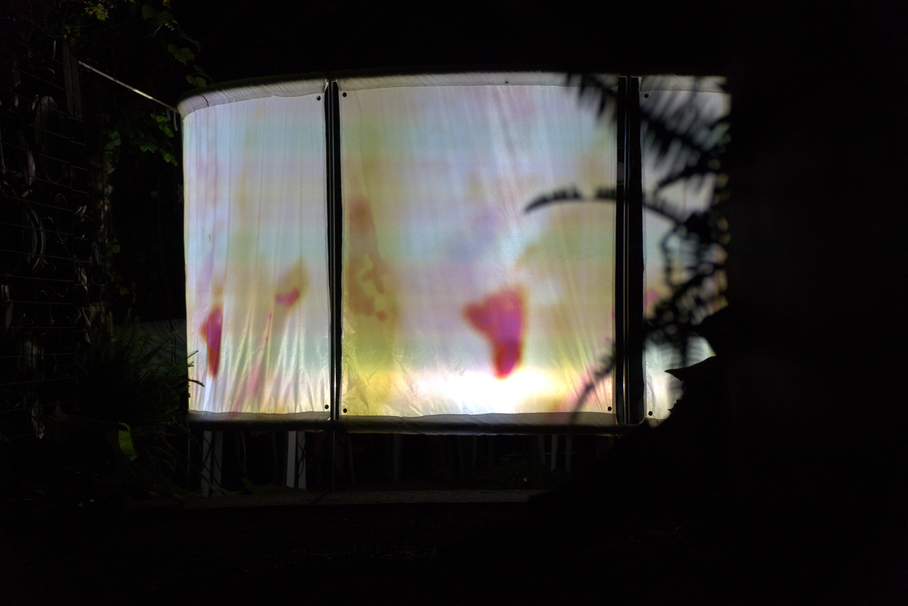
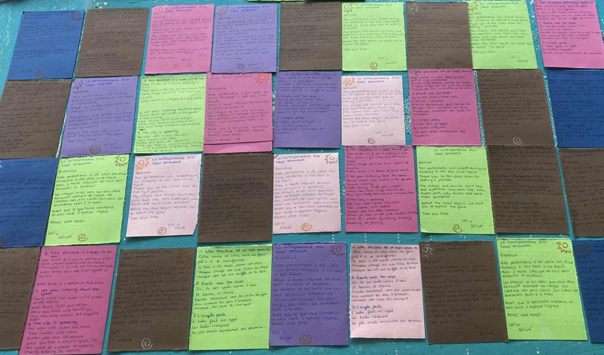
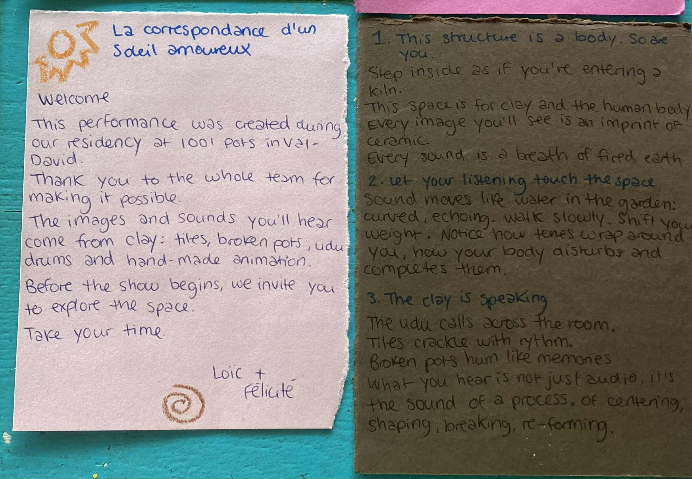
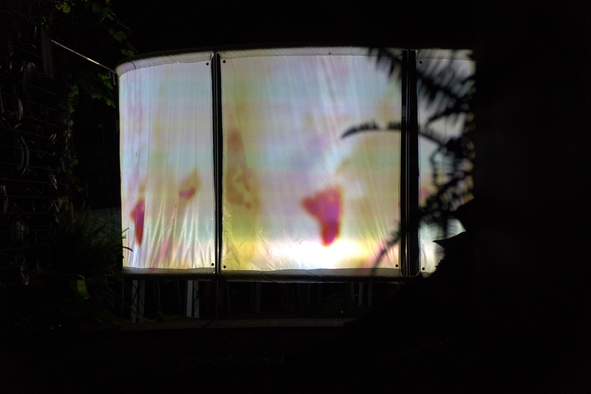
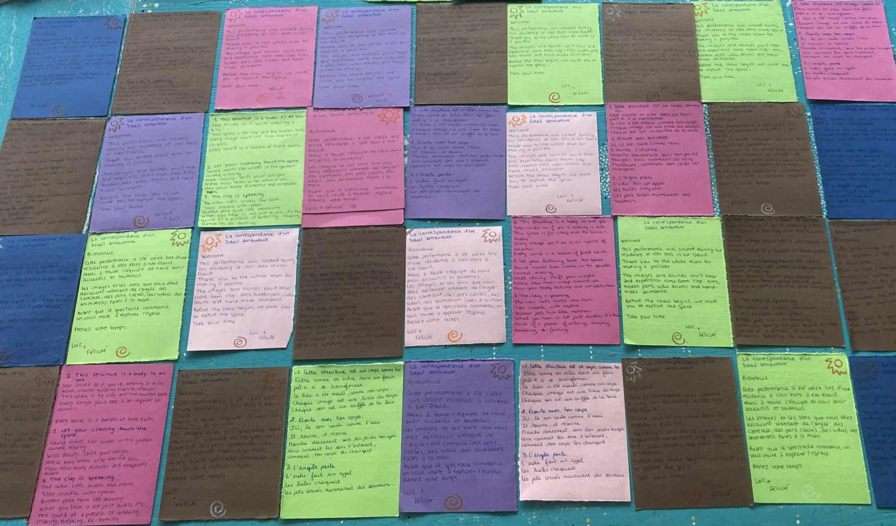
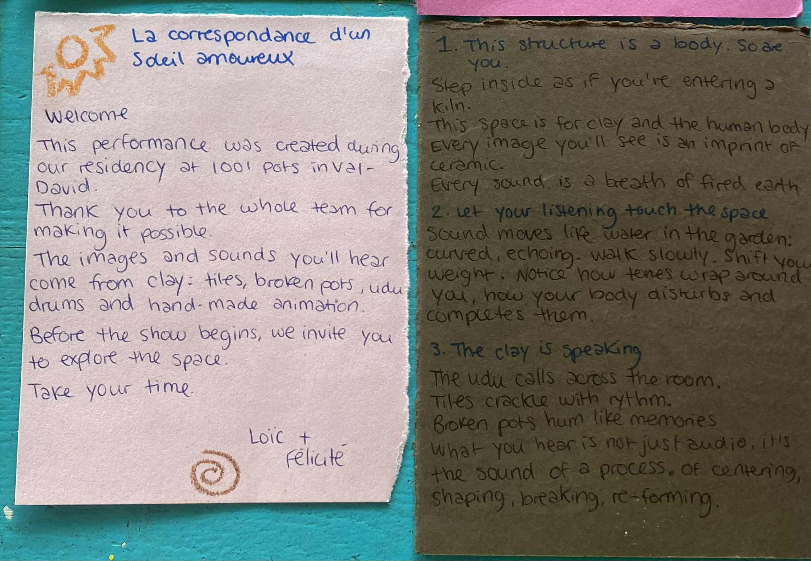

- La Correspondance d'un Soleil amoureux (2025)
- E/Sense Jams (2024, ongoing)
- Improvisation Series
Between performance and installation, Loïc Minty and I created an audiovisual organism that responded to its environment. Built from scratch, the system fed on ambient sound, sporadically activating pottery recordings and projections of plant celluloid and ceramic-print animations gathered during the residency. This generative ecosystem was then performed live using Carmen Abdallah’s instruments, staging a dialogue between the unpredictability of the natural world and the human capacity to adapt. Piezo microphones dispersed through the space functioned like a nervous system, sending signals to a TouchDesigner and MaxMSP interface that reacted to movement and low-frequency ground vibrations. The installation opened the performance frame, inviting the surrounding environment—and the public—into active participation. Developed for the Jardin de Silice, the work sought to foster a sense of communion between visitors and the site’s history through sound and image. Drawing on narrativity as a tool for immersion, we expanded the location’s sense of fantasy by researching and gathering stories connected to the space.
 






Live collaboration with musicians and performers at SAT.
Improvised AV sets exploring rhythm, gesture, and abstraction.